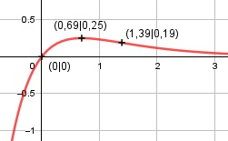

Aufgabe 150 f(x) = e-x * (1 - e-x ) Produktregel erste Ableitung: u = e-x Kettenregel: u' = -e-x v = 1 - e-x Kettenregel: v' = -(-e-x ) = e-x f'(x) = (-e-x ) * (1 - e-x ) + e-x * e-x f'(x) = e-x * (-1 + e-x + e-x ) f'(x) = -e-x + 2 * e-2x Kettenregel zweite Ableitung: f''(x) = -(-e-x ) + 2 * (-2) * e-2x f''(x) = e-x - 4 * e-2x Kettenregel dritte Ableitung: f'''(x) = -e-x - 4 * (-2) * e-2x f'''(x) = e-x + 8 * e-2x Definitionsbereich: -∞ < x < ∞ Waagerechte Asymptote: 1 1 f(x) = e-x * (1 - e-x ) = ---- * (1 - ----) ex ex geht gegen 0 für x --> ∞ Wertebereich: f(x) wird dann am größten, wenn x = 0,69 (Extrempunkt) f(0,69) = 0,25 --> -∞ < f(x) ≤ 0,25 Symmetrie zur y-Achse bzw. zum Punkt (0|0): f(-x) = e-(-x) * (1 - e-(-x) ) f(-x) = ex * (1 – ex) ≠ f(x) --> keine Achsensymmetrie -f(-x) = -(ex * (1 – ex)) ≠ f(x) --> keine Punktsymmetrie Nullstellen: f(x) = 0 e-x * (1 - e-x ) = 0 |:e-x 1 - e-x = 0 |+e-x e-x = 1 e-x = e0 Exponentenvergleich: -x = 0 | +x x = 0 f(0) = e-0 * (1 - e-0) = 1 * (1 - 1) = 0 N(0|0) Schnittpunkt mit der y-Achse: x = 0 f(0) = 0 Sy(0|0) Extrempunkte: f'(x) = 0 -e-x + 2e-2x = 0 e-x * (-1 + 2e-x ) = 0 |:e-x 2e-x - 1 = 0|+1 2 ---- = 1 |*ex ex ex = 2 |ln ln ex = ln 2 x * ln e = ln 2 x = ln 2 = 0,69 x = 0,69 f(0,69) = e-0,69 * (1 - e-0,69) = 0,25 f''(0,69) = e-0,69 - 4 * e-2*0,69 < 0 --> Hochpunkt (0,69|0,25) Wendepunkte: f''(0) = 0 e-x - 4 * e-2x = 0 e-x * (1 - 4 * e-x ) = 0 |:e-x 4 4 1 - ---- = 0 |+--- ex ex 4 1 = ---- |*ex ex ex = 4 |ln ln ex = ln 4 x * ln e = ln 4 x = ln 4 = 1,39 x = 1,39 f(1,39) = e-1,39 *(1 - e-1,39) = 0,19 f'''(1,39) = -e-1,39 + 8 * e-2*1,39 ≠ 0 --> WP(1,39|0,19) Graph:
